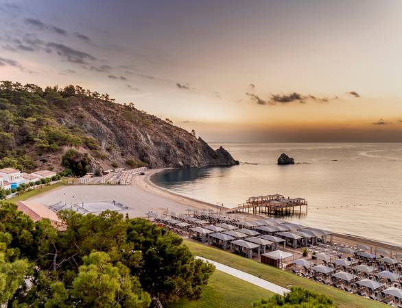
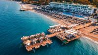
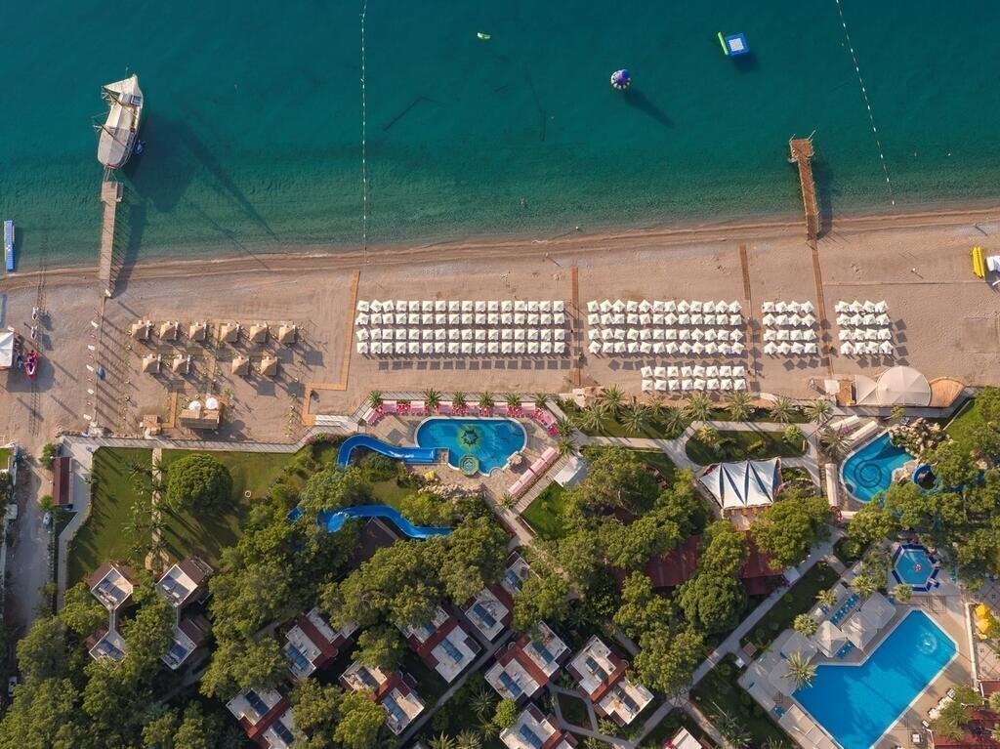

Markus Bacheno Simena 1999
Отель был открыт в 1999 году, последний ремонт проводился в 2014 году (в коттеджном городке в 2019
году).
Общая площадь территории составляет 165 000 кв.м.
Состоит из основного 4-этажного здания Simena Hotel (есть 2 лифта) и комплекса 1-2-этажных коттеджей
и
вилл Simena Holiday Village
(курсирует шаттл между главным зданием и коттеджами, каждые 15 минут).
К оплате принимаются банковские карты Visa, Masterсard, Amex.
Один 4-х этажный корпус: 107 стандартных номеров (максимально 2+1 человека,
32 квадратных метра); 12 двухкомнатных делюкс сьюитов (холл, спальня с дверью,
ванна с гидромассажем, 2 телевизора, 2 мини-бара, максимально 3+1 человека,
64 квадратных метра).
Rixos Premium Tekirova

Ilona Bronevitkaya Rixos Premium Tekirova 2000
С 2014 года отель приобрел статус премиум-класса. В 2014 году прошла реновация всех номеров и всей
инфраструктуры (основной ресторан, a la carte рестораны, мини-клуб, лобби и др.),
построены новые виллы – Executive Villa и Superior Villa.
Один из популярных отелей для семейных пар и отдыха с детьми.
Разнообразные номера, возможность размещения больших семей с детьми, водные горки,
бассейны, увлекательные анимационные программы. Разнообразное и качественное питание,
6 ресторанов a la carte с тематическими меню. Рекомендуем для семейных пар и отдыха с детьми.
Хорошее расположение для гостей
Этот шикарный отель с обслуживанием по системе "все включено"
расположен на побережье
Средиземного моря, в 8 км от древнеримского города Фаселис.
Из отеля открывается прекрасный вид на море.
Grand Park Kemer Hotel

Vinchenso Plaetto Grand Park Kemer Hotel 2003
Отель Grand Park Kemer - Ultra расположен прямо на набережной. Отель All
Inclusive предлагает роскошный спа-центр и открытый бассейн с видом на
залив Антальи.
Полностью отремонтированные в апреле 2019 года номера оформлены в
спокойных тонах. Большие окна обеспечивают хорошее естественное освещение.
В каждом номере есть меблированный балкон с видом на Средиземное море или лес.
Гости отеля Grand Park Kemer могут искупаться в освежающем бассейне.
Гости могут поплавать в крытом бассейне или заказать расслабляющий
массаж. В отеле Grand Park Kemer - Ultra. Кроме того, в распоряжении
гостей турецкая баня, сауна и салон красоты. В отеле также работает
мини-клуб.
В отеле Grand Park Kemer - Ultra. Отель All Inclusive расположен в 28 км от
аэропорта Анталии.
Парам особенно нравится расположение
Pirates Beach Club, 5

Мусса Ибрахим Pirates Beach Club, 5 1999
Отель расположен в 1 км от центра п. Текирова, в 70 км от аэропорта Анталии.
Отель Клубного типа 1ого Класса. Территория 36.000 Кв.М.
Период Работы: Апрель - Ноябрь
Питание:
Завтрак, поздний завтрак, обед, ужин - шведский стол. В течение дня Вам будут бесплатно
предложены прохладительные, горячие и алкогольные напитки местного и импортного производства,
а также в определенное время работают снэк-бары, закуски и поздний ужин
К услугам
гостей собственный песчано-галечный пляж, просторные стандартные и семейные номера
с современным дизайном, СПА-центр, много площадок для проведения активного досуга
как взрослых, так и детей. Для маленьких гостей отеля
предлагаются туры на пиратском корабле. Отель отлично подойдет для семейного отдыха.